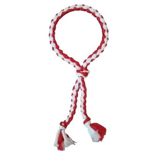

O kruang branco ponta vermelha representa a primeira evolução do praticante dentro do Muay Thai. Após aprender os fundamentos básicos no kruang branco, o aluno começa a desenvolver mais controle, consciência corporal e confiança na execução dos movimentos. Nesta fase, os golpes deixam de ser apenas movimentos básicos e passam a ter mais intenção, precisão e equilíbrio. O praticante começa a entender melhor a importância da postura, do posicionamento e do tempo de ataque e defesa. Além disso, o treino se torna mais dinâmico, com a introdução de combinações simples de golpes, fazendo com que o aluno desenvolva coordenação motora, resistência física e ritmo de luta. É também nesse estágio que o praticante começa a ter um maior controle emocional durante os treinos, aprendendo a manter a calma e o foco. O kruang branco ponta vermelha é uma fase essencial, pois consolida a base construída no início e prepara o aluno para níveis mais avançados, onde a intensidade, a técnica e a estratégia se tornam ainda mais importantes.
Nesta fase, o praticante já não é mais totalmente iniciante. Ele começa a demonstrar mais controle nos movimentos, maior equilíbrio e uma execução mais limpa dos golpes. Os treinos passam a exigir mais resistência física e atenção aos detalhes, como postura, respiração e precisão. O aluno também começa a desenvolver mais confiança, perdendo o medo inicial e se adaptando melhor ao ritmo do treino.
O tempo médio neste nível varia entre 2 a 4 meses, sendo o período necessário para o praticante evoluir para o próximo kruang, dependendo da sua dedicação e frequência nos treinos.
A ponta vermelha simboliza o progresso do aluno, mostrando que ele já superou a fase inicial e está evoluindo dentro do Muay Thai.
O objetivo do kruang branco ponta vermelha é fortalecer a base do aluno e começar a desenvolver fluidez nos movimentos, preparando-o para níveis mais avançados.
Nesta fase, foque em treinar combinações simples de golpes de forma repetitiva, buscando melhorar a coordenação e a precisão. Não tenha pressa para aumentar a força, priorize a execução correta dos movimentos. Treinar em frente ao espelho pode ajudar a corrigir postura e técnica, além de desenvolver mais consciência corporal durante os golpes.
Após essa fase, o praticante evolui para o kruang vermelho, onde os golpes se tornam mais fortes, rápidos e técnicos.